①の場合
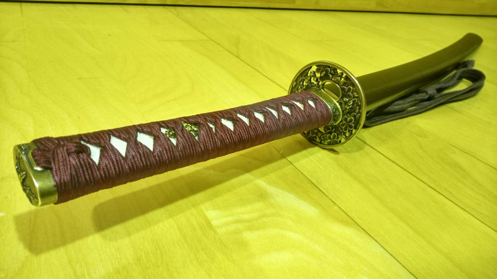 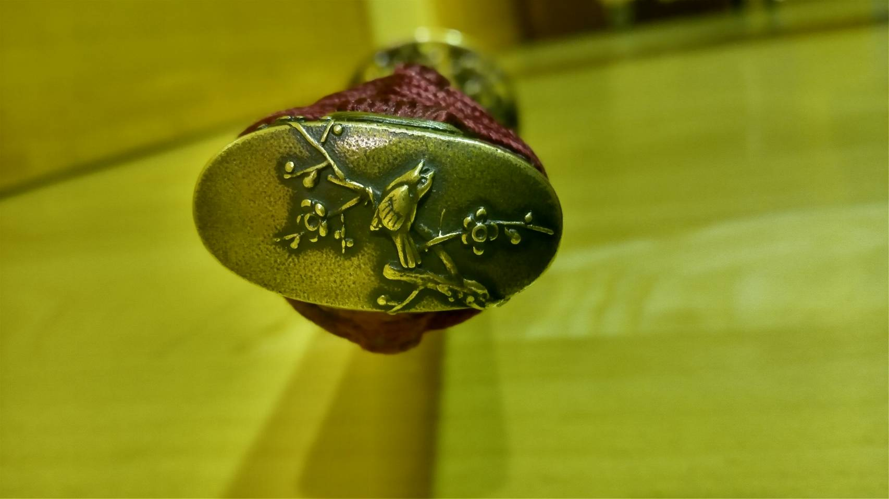 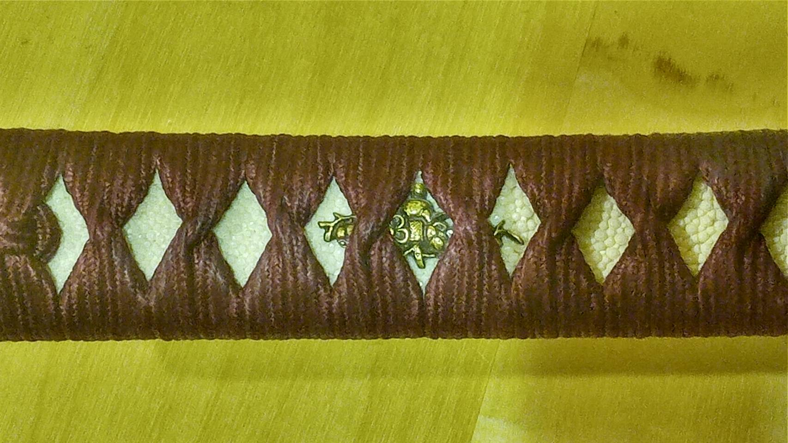 テーマ：梅
鍔「正親梅」 頭金・縁金「梅とウグイス」 目貫「梅」
②の場合
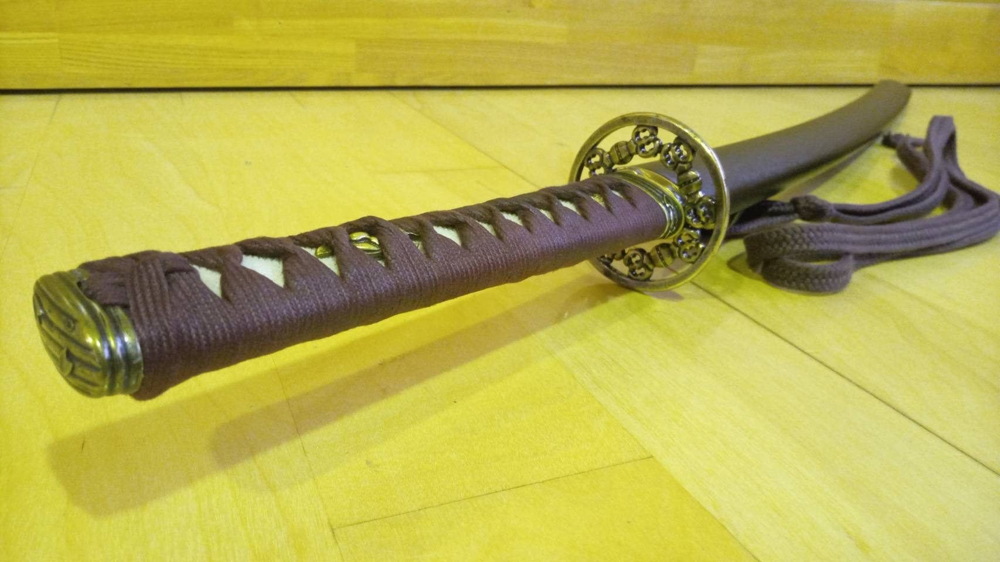 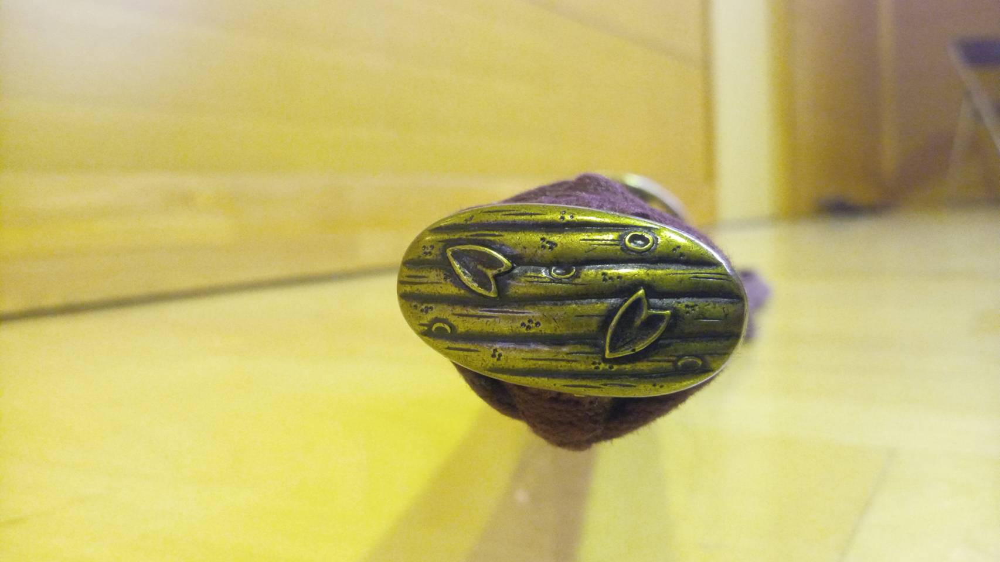 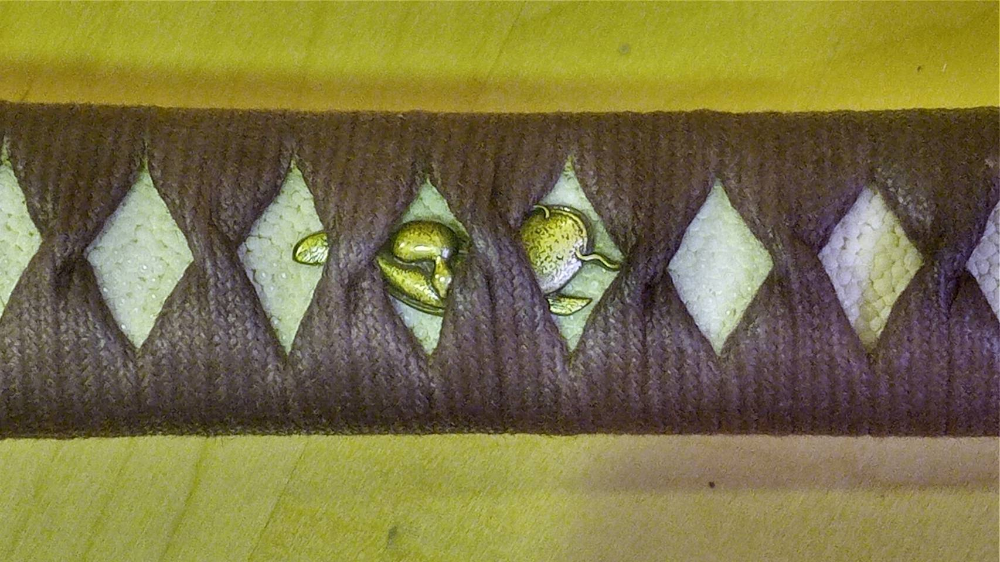 自由カスタム
鍔「独孤剣」 頭金・縁金「花筏」 目貫「瓢箪鯰」

居合の道に入るために欠かすことのできないものの一つが模擬刀である。
刀は
どこまでこだわるかは自分次第。部員のこだわりが詰まった刀も一部公開。
日本刀および
（赤色部はカスタマイズ可能部位）
魅力はなんと言っても刀のオーダーメイド！赤色の部分は自分の好みにカスタマイズできます！！
模擬刀は決して安い買い物ではありません。しかしだからこそ、細かい部分まで自分で考えて悩んで選ぶ価値があります。時間をかけて選んだ分、自分の好みを具現化した刀や個性を表現した刀には愛着が湧きやる気も上がるというメリットもあります。自分だけの一振り、これは間違いなく大きな魅力です。
「刀のカスタマイズって言っても、どうやって決めればいいの？」と思う人もいるでしょう。
そんな方に、選び方の一例をご紹介。まず初めに大きく分けて２通りの考え方があります。
① 好きな花や動物、模様などメインテーマを決め、それに沿った装飾を揃えた統一感のある刀にする
② カスタマイズ可能な部位ごとにそれぞれ好きな装飾のものを一つひとつ選び、個性が光る刀にする
①の場合
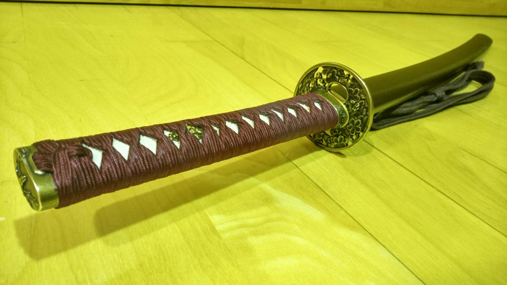 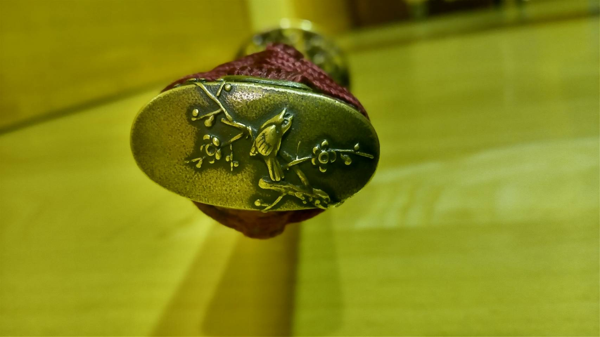 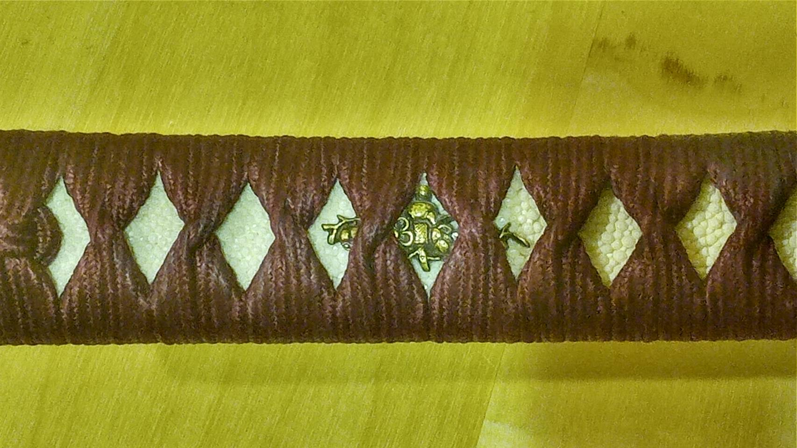 テーマ：梅
鍔「正親梅」 頭金・縁金「梅とウグイス」 目貫「梅」
②の場合
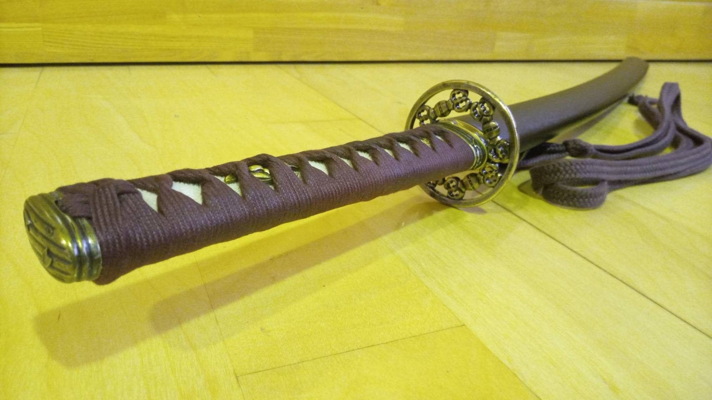 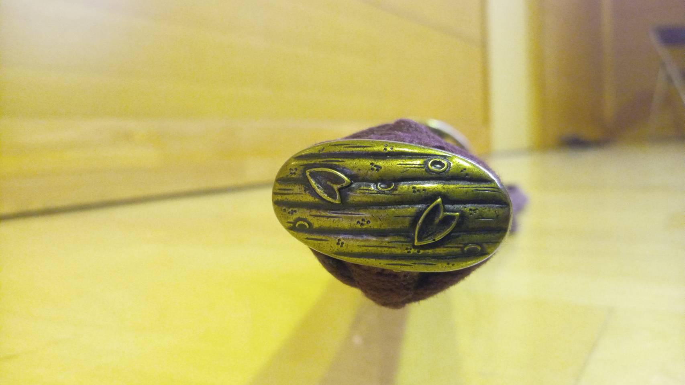 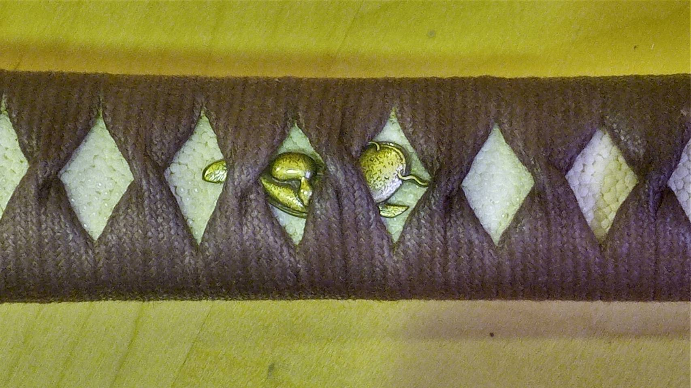 自由カスタム
鍔「独孤剣」 頭金・縁金「花筏」 目貫「瓢箪鯰」
刀を選ぶときに特にこだわった部分を部員に聞き取り調査してランキングに！
みんながどんなところで個性を表しているかが参考になるかもしれませんよ。
第一位：鍔
刀と言えばやっぱり鍔！目立つこの部分を最もこだわる部員がほとんど！
第二位：柄巻の色
色がつくと刀が華やかになりますね！
第三位：目貫
マイナーな部分ですが、こだわる部員多し！
その他にも頭金と縁金、刃文、下緒など隅々までカスタマイズ可能！
特にこだわりの強い部員の中には鞘や巻下鮫の色まで変更する者も...！